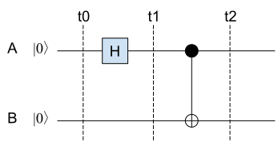
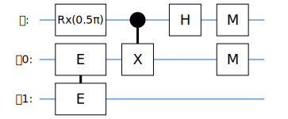

用Cirq模拟量子隐形传态过程
Ping Zhou, 2020-10-28
这里我们用谷歌的Cirq框架来模拟量子隐形传态的过程：Alice这里有一个量子比特 \(|\psi\rangle\) ，通过量子隐形传态电路，把状态传送到Bob那里。
关于量子隐形传态的原理，请参见我的相关文章。
制备纠缠态的量子比特
要在Alice和Bob之间实现量子隐形传态，首先需要用到一对纠缠态的量子比特。这可以通过一个H门和一个CNOT门来实现：

为简化后面的量子电路，可以把这里的H门和CNOT门包装成一个自定义的复合门，这样也方便以后重用。我们把这个自定义门起名叫“纠缠门”（EntangleGate）。
import cirq import numpy as np # 创建一个自定义门 - “纠缠门”，输入2个量子比特 class EntangleGate(cirq.ops.gate_features.TwoQubitGate): # 内部就是一个H门和一个CNOT门 def _decompose_(self, qubits): q0, q1 = qubits yield cirq.H(q0), yield cirq.CNOT(q0, q1) # 打印的时候如何显示这个门？ def _circuit_diagram_info_(self, args): return cirq.protocols.CircuitDiagramInfo(wire_symbols=('E', 'E'))
试验一下这个自定义门：
𝜙0 = cirq.NamedQubit("𝜙0") 𝜙1 = cirq.NamedQubit("𝜙1") circuit = cirq.Circuit(EntangleGate().on(𝜙0, 𝜙1)) print(circuit)
𝜙0: ───E───
│
𝜙1: ───E───
经过这个“纠缠门”，我们就得到了一对纠缠态的量子比特 \(|\phi_0\rangle\) 和 \(|\phi_1\rangle\) 。
量子隐形传态
完整的量子隐形传态的电路如下图所示：

Alice这边的电路
Alice这边，除了一对纠缠态量子比特 \(|\phi_0\rangle\), \(|\phi_1\rangle\) 外，还有一个要传送的量子比特 \(|\psi\rangle\) 。量子隐形传态的目的，就是在Bob那里得到一个与 \(|\psi\rangle\) 状态相同的量子比特。
Alice这边要做的事：
- 准备要传送的量子比特
- 准备纠缠态的量子比特对，一个给Bob，一个留给自己
- 运行电路，然后把测量结果（m1, m2）告诉Bob
# 要传送的量子比特 𝜓 = cirq.NamedQubit("𝜓") # 纠缠态的量子比特对 𝜙0 = cirq.NamedQubit("𝜙0") 𝜙1 = cirq.NamedQubit("𝜙1")
Cirq里面量子比特初始状态都是 \(|0\rangle\) ，所以Alice这边 \(|\psi\rangle\) 初始状态也是\(|0\rangle\)。 为了验证隐形传态的过程，我们需要对 \(|\psi\rangle\) 做一些变换，让它变成非 \(|0\rangle\) ，然后到Bob那边去验证收到的状态。
这里定义一个函数 prepare_psi 来对 \(|\psi\rangle\) 做变换：
# 对|𝜓⟩进行任意角度的RX变换 def prepare_psi(rx): return cirq.Circuit(cirq.rx(rx).on(𝜓)) # 要传送的量子比特|𝜓⟩：|0⟩绕X轴旋转 π/2 circuit = prepare_psi(rx=np.pi/2) # 首先跑一下这个准备电路，把|𝜓⟩的状态记下来，以备后面验证 result = cirq.Simulator().simulate(circuit) print(np.round(result.final_state,3)) # 把|𝜓⟩这时的状态记下来，以备后面验证 psi_state = result.final_state
[0.707+0.j 0. -0.707j]
接下来我们来搭建Alice这边的电路。
from cirq.contrib.svg import SVGCircuit # 准备纠缠态的量子比特对|𝜙0⟩, |𝜙1⟩ circuit.append(EntangleGate().on(𝜙0, 𝜙1)) # CNOT门：|𝜓⟩-|𝜙0⟩，然后|𝜓⟩上加H门 circuit.append([cirq.CNOT(𝜓, 𝜙0), cirq.H(𝜓)], strategy=cirq.InsertStrategy.NEW_THEN_INLINE) # 对|𝜓⟩，|𝜙0⟩进行测量 circuit.append([cirq.measure(𝜙0), cirq.measure(𝜓)], strategy=cirq.InsertStrategy.NEW_THEN_INLINE) SVGCircuit(circuit) # print(circuit)

Alice运行这个电路，得到 \(|\psi\phi_0\rangle\) 的测量值：
result_alice = cirq.Simulator().simulate(circuit, qubit_order=[𝜓, 𝜙0, 𝜙1]) m_psi = int(result_alice.measurements['𝜓'][0]) m_phi0 = int(result_alice.measurements['𝜙0'][0]) print("Alice: Measure(𝜓) = {}, Measure(𝜙0) = {}".format(m_psi, m_phi0))
Alice: Measure(𝜓) = 0, Measure(𝜙0) = 0
Bob这边的电路
假设要传送的量子比特状态是 \(|\psi\rangle=(\alpha|0\rangle+\beta|1\rangle)\) 。 Alice把前面测量得到的结果告诉Bob，然后Bob根据得到的信息，对手里的 \(|\phi_1\rangle\) 进行相应的变换，从而把它的状态变成和 \(|\psi\rangle\) 一样：
- 如果Alice测量 \(|\psi\phi_0\rangle\) 得到00，什么也不用做， \(|\phi_1\rangle\) 状态已经是 \((\alpha|0\rangle+\beta|1\rangle)\) 。
- 如果Alice测量 \(|\psi\phi_0\rangle\) 得到01，那么 \(|\phi_1\rangle=(\beta|0\rangle+\alpha|1\rangle)\) ，对它做一个X变换就可以变成 \((\alpha|0\rangle+\beta|1\rangle)\) 。
- 如果Alice测量 \(|\psi\phi_0\rangle\) 得到10，那么 \(|\phi_1\rangle=(\alpha|0\rangle-\beta|1\rangle)\) ，对它做一个Z变换就可以变成 \((\alpha|0\rangle+\beta|1\rangle)\) 。
- 如果Alice测量 \(|\psi\phi_0\rangle\) 得到11，那么 \(|\phi_1\rangle=(\alpha|1\rangle-\beta|0\rangle)\) ，对它做一个X变换再加一个Z变换，就可以变成 \((\alpha|0\rangle+\beta|1\rangle)\) 。
怎么来模拟Bob这边的过程呢？
Bob这里有一个量子比特 \(|\phi_1\rangle\) ，当Bob得到Alice发来的测量结果后， \(|\phi_1\rangle\) 的状态必然是上述4种状态之一。Bob要根据Alice发来的信息，决定在 \(|\phi_1\rangle\) 后面加上什么门。
# 根据Alice测量|𝜓𝜙0⟩ 的结果，返回要对𝜙1进行的变换 def generate_bob_circuit(m_psi, m_phi0): if m_psi == 0 and m_phi0 == 0: # 测量 |𝜓𝜙0⟩ 得到00，什么也不用做 return cirq.Circuit() elif m_psi == 0 and m_phi0 == 1: # 测量 |𝜓𝜙0⟩ 得到01，对|𝜙1⟩做一个X变换 return cirq.Circuit(cirq.X(𝜙1)) elif m_psi == 1 and m_phi0 == 0: # 测量 |𝜓𝜙0⟩ 得到10，对|𝜙1⟩做一个Z变换 return cirq.Circuit(cirq.Z(𝜙1)) elif m_psi == 1 and m_phi0 == 1: # 测量 |𝜓𝜙0⟩ 得到11，对|𝜙1⟩做一个X变换再加Z变换 return cirq.Circuit(cirq.X(𝜙1), cirq.Z(𝜙1)) circuit_bob = generate_bob_circuit(m_psi, m_phi0) print("Alice: Measure(𝜓) = {}, Measure(𝜙0) = {}".format(m_psi, m_phi0))
Alice: Measure(𝜓) = 0, Measure(𝜙0) = 0
然后我们要跑Bob的电路，但这里又有个问题：
每次用Simulator跑电路，都会重新初始化其中的量子比特，所以Bob这里的 \(|\phi_1\rangle\) 会被重新初始化！
所以要模拟Bob的过程，我们需要把Bob这边的电路（即 \(|\phi_1\rangle\) ）**初始化**成Alice那边运行后的状态。这就相当于把两边的模拟过程接起来了！
所以我们要做的是：
- 在Alice运行电路后，记下运行后的状态，这个在前面的代码里，已经记在
result_alice里了； - 用Alice这边的 \(|\phi_1\rangle\) 状态向量，来初始化Bob这边的电路。
关于Cirq里的状态向量
关于状态向量，这里多解释几句。例如我们有个系统，其中有3个量子比特，分别表示成
\begin{matrix} \alpha_0|0\rangle + \beta_0|1\rangle, \\ \alpha_1|0\rangle + \beta_1|1\rangle, \\ \alpha_2|0\rangle + \beta_2|1\rangle, \end{matrix}那么这个系统的状态向量就是这3个量子比特的向量的张量积(Tensor Product/Kronecker Product)：
\begin{matrix} \begin{pmatrix} \alpha_0 \\ \beta_0 \end{pmatrix} \otimes \begin{pmatrix} \alpha_1 \\ \beta_1 \end{pmatrix} \otimes \begin{pmatrix} \alpha_2 \\ \beta_2 \end{pmatrix} = begin{pmatrix} \alpha_0\alpha_1\alpha_2 \\ \alpha_0\alpha_1\beta_2 \\ \alpha_0\beta_1\alpha_2 \\ \alpha_0\beta_1\beta_2 \\ \beta_0\alpha_1\alpha_2 \\ \beta_0\alpha_1\beta_2 \\ \beta_0\beta_1\alpha_2 \\ \beta_0\beta_1\beta_2 \end{pmatrix} \end{matrix}上面的矩阵还告诉我们，如果用计算基矢(Computational Basis)来表示的话，系统的当前状态是 \(|000\rangle, |001\rangle, \cdots, |111\rangle\) 等计算基矢的叠加态：
\begin{matrix} \alpha_0\alpha_1\alpha_2 |000\rangle +\\ \alpha_0\alpha_1\beta_2 |001\rangle +\\ \alpha_0\beta_1\alpha_2 |010\rangle +\\ \alpha_0\beta_1\beta_2 |011\rangle +\\ \beta_0\alpha_1\alpha_2 |100\rangle +\\ \beta_0\alpha_1\beta_2 |101\rangle +\\ \beta_0\beta_1\alpha_2 |110\rangle +\\ \beta_0\beta_1\beta_2 |111\rangle \end{matrix}
在Cirq里面，系统的状态向量就是用这样一组复数来表示，并且按照上面的Kronecker顺序排列。我们运行模拟器，返回得到的 results 里有一个 final_state 成员，就是当前系统的状态向量。例如前面我们看到：
result_alice = cirq.Simulator().simulate(circuit, qubit_order=[𝜓, 𝜙0, 𝜙1])
如果我们查看 result_alice.final_state ，里面就有系统的状态向量，包含了8个复数。
前面我们说到，Alice的电路有三个量子比特，已经测量了前两个量子比特，现在要的是第三个的状态向量。
先看一个简单的例子，如果前两个量子比特的测量结果是00，对上面的式子意味着什么？
- 第一个量子比特测量后是 \(|0\rangle\) ，也就是说 \(\alpha_0=1, \beta_0=0\) .
- 同理，第二个量子比特测量后也是 \(|0\rangle\) ，也就是说 \(\alpha_1=1, \beta_1=0\) .
放到上面的式子里，整个系统的状态就变成了
\begin{matrix} \alpha_0\alpha_1\alpha_2 |000\rangle + \alpha_0\alpha_1\beta_2 |001\rangle = \\ \alpha_2 |000\rangle + \beta_2 |001\rangle \end{matrix}因为 \(\beta_0=0, \beta_1=0\) ，其他项都变成0消掉了。
所以，如果前两个量子比特测量结果是00，那么第三个量子比特的状态就是前面8个叠加项的第一和第二项，我们只要看 result_alice.final_state 的第一和第二项，就能得到 \(|\phi_1\rangle\) 的状态：
result_alice.final_state[0:2]
同理：
- 如果前两个量子比特测量结果是01，那么第三个量子比特 \(\phi_1\) 的状态就在
result_alice.final_state[2:4]里； - 如果前两个量子比特测量结果是10，那么第三个量子比特 \(\phi_1\) 的状态就在
result_alice.final_state[4:6]里； - 如果前两个量子比特测量结果是11，那么第三个量子比特 \(\phi_1\) 的状态就在
result_alice.final_state[6:8]里；
另外还要注意的是，真实的量子计算机里一般是不能获取系统的状态向量的，这种方法只适用于模拟器环境。
到这里，我们知道如何根据Alice的测量结果，得到 \(|\phi_1\rangle\) 的状态向量。接下来我们就可以用这个状态向量，来初始化Bob这边的电路，这样就把两边电路的状态接起来了。
定义一个函数，根据Alice的测量结果，返回 \(|\phi_1\rangle\) 的状态向量：
# 根据Alice的测量结果，返回|𝜙1⟩的状态向量，用来初始化Bob的电路 def bob_phi_1_state(m_psi, m_phi0, result_alice): if m_psi == 0 and m_phi0 == 0: return result_alice.final_state[0:2] elif m_psi == 0 and m_phi0 == 1: return result_alice.final_state[2:4] elif m_psi == 1 and m_phi0 == 0: return result_alice.final_state[4:6] elif m_psi == 1 and m_phi0 == 1: return result_alice.final_state[6:8] bob_initial_state = bob_phi_1_state(m_psi, m_phi0, result_alice)
然后Bob运行电路的时候，用这个状态向量来初始化 \(|\phi_1\rangle\) 。在调用 Simulator 的时候，传入 initial_state 参数：
result_bob = cirq.Simulator().simulate(circuit_bob, qubit_order=[𝜙1], initial_state=bob_initial_state) print("Bob |𝜙1⟩:", np.round(result_bob.final_state, 3)) print("Alice |𝜓⟩: ", np.round(psi_state, 3))
Bob |𝜙1⟩: [0.707+0.j 0. -0.707j] Alice |𝜓⟩: [0.707+0.j 0. -0.707j]
多试几次，你会发现结果都是一致的。因此，Bob那边得到了和原先 \(|\psi\rangle\) 状态一样的量子比特！
另外要注意的是，量子信息有 不可复制性 。在这个时候原先的 \(|\psi\rangle\) 已经被测量坍缩了（记得我们在Alice那边做的测量吗？），所以并不存在2个 \(|\psi\rangle\) 副本的问题。我们之所以能在这里打印出它的状态，是因为我们利用模拟器的特性，在制备的时候把它的状态向量记下来，放到这里做验证用。